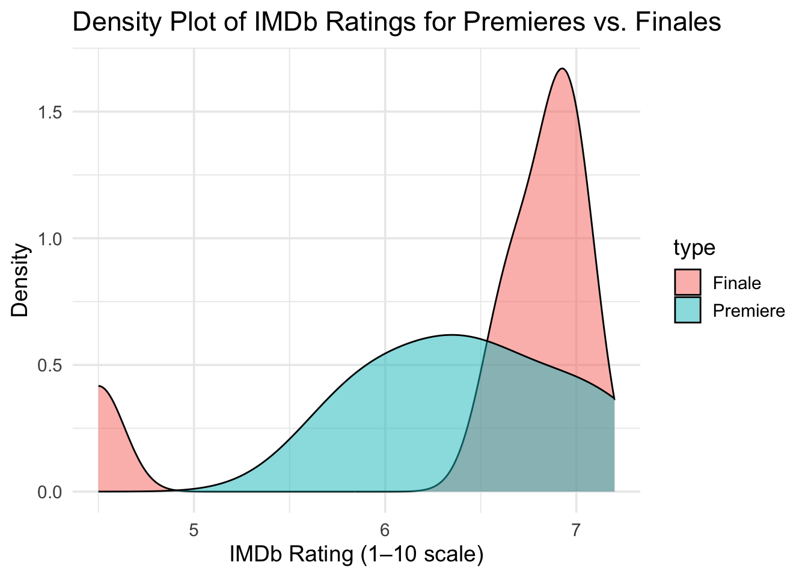
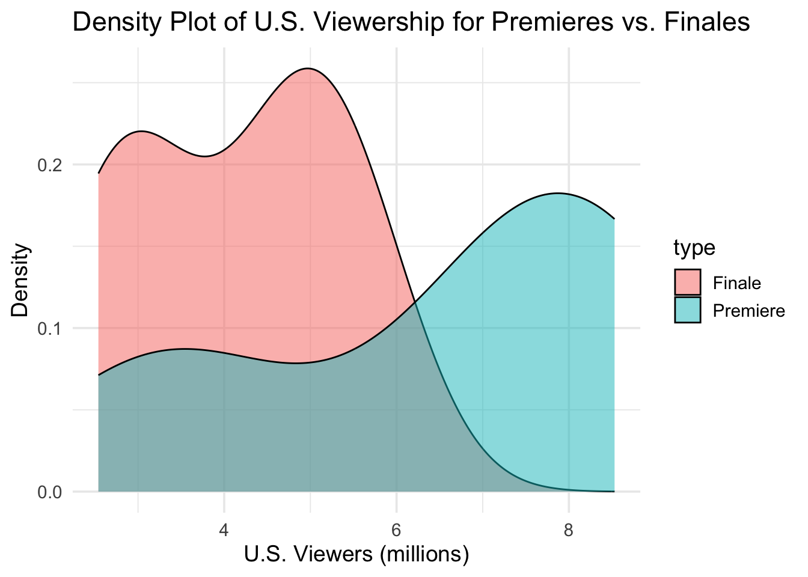

p1 <- ggplot(simpsons_episodes_filtered, aes(x = imdb_rating, y = us_viewers_in_millions)) +
geom_point(aes(text = paste("Title:", title,
"<br>Season:", season,
"<br>IMDb Votes:", imdb_votes)),
alpha = 0.6, color = "darkorange") +
geom_smooth(method = "lm", se = FALSE, color = "navy") +
labs(
title = "Relationship Between IMDb Ratings and U.S. Viewership",
x = "IMDb Rating (1–10 scale)",
y = "U.S. Viewers (millions)") +
theme_minimal(base_size = 14)
ggplotly(p1, tooltip = "text")Exploratory Data Analysis
In this analysis, I explore what makes a Simpsons episode successful during the 2010–2016 seasons. I define success through three lenses: critical reception (IMDb ratings), fan engagement (IMDb votes), and audience reach (U.S. viewership numbers). I used the cleaned simpsons_episodes_filtered dataset, and focused on the following variables: In this analysis, I explore what makes a Simpsons episode successful during the 2010–2016 seasons. I define success through three lenses: critical reception (IMDb ratings), fan engagement (IMDb votes), and audience reach (U.S. viewership numbers). I used the cleaned simpsons_episodes_filtered dataset and focused on the following variables:
imdb_rating: IMDb rating (critical reception)imdb_votes: Number of IMDb votes (fan engagement)us_viewers_in_millions: U.S. viewership numbers (audience reach)views: Total view countsnumber_in_season: Episode position in the season (to identify premieres and finales)
I also create a new dataset called episode_summary based on the simpsons_episodes_filtered dataset.
Do Higher-Rated Episodes Attract More Viewers?
I explored whether higher-rated episodes attract more viewers by creating a scatter plot and box plot comparing IMDb ratings (
imdb_rating) against U.S. viewers (us_viewers_in_millions). To uncover non-obvious insights, I sliced the data by season and highlighted outliers where episodes received high ratings but had low viewership, or vice versa. One key insight is that while there’s a general trend where higher ratings loosely align with more viewers, there are several exceptions especially in later seasons, where strong ratings don’t always translate into high audience numbers, possibly reflecting the shift to online streaming.
p2 <- simpsons_episodes_filtered |>
mutate(rating_bin = cut(imdb_rating, breaks = seq(4, 9, by = 0.5))) |>
ggplot(aes(x = rating_bin, y = us_viewers_in_millions, text = paste0(
"Title: ", title,
"<br>Season: ", season,
"<br>IMDb Rating: ", imdb_rating,
"<br>Viewers: ", us_viewers_in_millions, "M"
))) +
geom_boxplot(fill = "gold") +
labs(
title = "Distribution of U.S. Viewership Across IMDb Rating Bins",
x = "IMDb Rating (Binned)",
y = "U.S. Viewers (millions)") +
theme_minimal(base_size = 14)
ggplotly(p2, tooltip = "text")Do Episodes with More IMDb Votes Get More Views?
I examined whether episodes with more IMDb votes get more views. Here, I created a scatter plot below that shows the relationship between the number of IMDb votes an episode has received and its total U.S. viewership. There’s a visible positive trend: episodes with more IMDb votes generally have more total views, as shown by the upward-sloping line.
p3 <- ggplot(simpsons_episodes_filtered, aes(x = imdb_votes, y = views)) +
geom_point(aes(text = paste0(
"Title: ", title,
"<br>Season: ", season,
"<br>IMDb Rating: ", imdb_rating,
"<br>Total Views: ", views
)),
alpha = 0.6, color = "darkgreen") +
geom_smooth(method = "lm", se = FALSE, color = "limegreen") +
labs(
title = "Relationship Between IMDb Votes and Total Viewership",
x = "IMDb Votes (Fan Engagement)",
y = "Total Views (Audience Reach)") +
theme_minimal(base_size = 14)
ggplotly(p3, tooltip = "text")Are Season Premieres and Finales Better Rated or More Watched?
I compare season premieres and finales to see which tend to perform better in terms of IMDb ratings and U.S. viewership.
episode_summary <- simpsons_episodes_filtered |>
group_by(season) |>
mutate(
is_premiere = number_in_season == 1,
is_finale = number_in_season == max(number_in_season))
premieres <- episode_summary |> filter(is_premiere) # Get only premieres
finales <- episode_summary |> filter(is_finale) # Get only finales
premieres <- premieres |> mutate(type = "Premiere")
finales <- finales |> mutate(type = "Finale")
premieres_finales <- bind_rows(premieres, finales)# IMDb ratings density
ggplot(premieres_finales, aes(x = imdb_rating, fill = type)) +
geom_density(alpha = 0.5) +
labs(
title = "Density Plot of IMDb Ratings for Premieres vs. Finales",
x = "IMDb Rating (1–10 scale)",
y = "Density") +
theme_minimal(base_size = 14)
# US viewers density
ggplot(premieres_finales, aes(x = us_viewers_in_millions, fill = type)) +
geom_density(alpha = 0.5) +
labs(
title = "Density Plot of U.S. Viewership for Premieres vs. Finales",
x = "U.S. Viewers (millions)",
y = "Density") +
theme_minimal(base_size = 14)
# Ratings over seasons
ggplot(season_summary, aes(x = season, y = avg_rating, color = type)) +
geom_line() +
geom_point() +
labs(
title = "Average IMDb Ratings of Premieres vs. Finales Across Seasons (2010–2016)",
x = "Season",
y = "Average IMDb Rating (1–10 scale)",
color = "Episode Type") +
theme_minimal(base_size = 14)# Views over seasons
ggplot(season_summary, aes(x = season, y = avg_views, color = type)) +
geom_line() +
geom_point() +
labs(
title = "Average U.S. Viewership of Premieres vs. Finales Across Seasons (2010–2016)",
x = "Season",
y = "Average U.S. Viewers (millions)",
color = "Episode Type") +
theme_minimal(base_size = 14)summary_table <- premieres_finales |>
group_by(type) |>
summarise(
mean_rating = mean(imdb_rating, na.rm = TRUE),
median_rating = median(imdb_rating, na.rm = TRUE),
mean_views = mean(us_viewers_in_millions, na.rm = TRUE),
median_views = median(us_viewers_in_millions, na.rm = TRUE),
n = n())
DT::datatable(summary_table,
caption = "Summary Statistics for Premieres vs. Finales",
options = list(pageLength = 5, scrollX = TRUE))top_premieres <- premieres |>
arrange(desc(imdb_rating)) |>
select(season, title, imdb_rating, us_viewers_in_millions) |>
head(5)
top_finales <- finales |>
arrange(desc(imdb_rating)) |>
select(season, title, imdb_rating, us_viewers_in_millions) |>
head(5)
DT::datatable(top_premieres,
caption = "Top 5 Premieres by IMDb Rating",
options = list(pageLength = 5, scrollX = TRUE))DT::datatable(top_finales,
caption = "Top 5 Finales by IMDb Rating",
options = list(pageLength = 5, scrollX = TRUE))